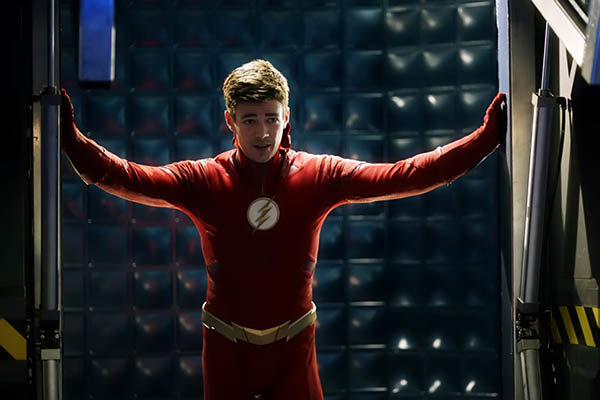
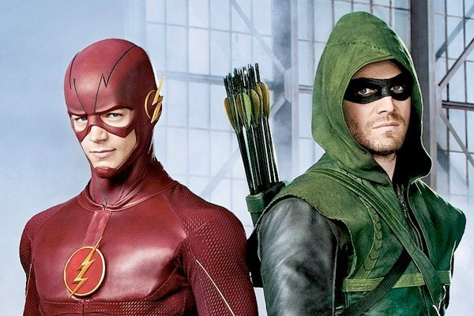
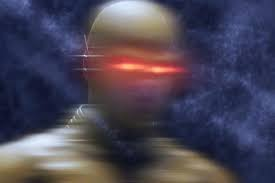
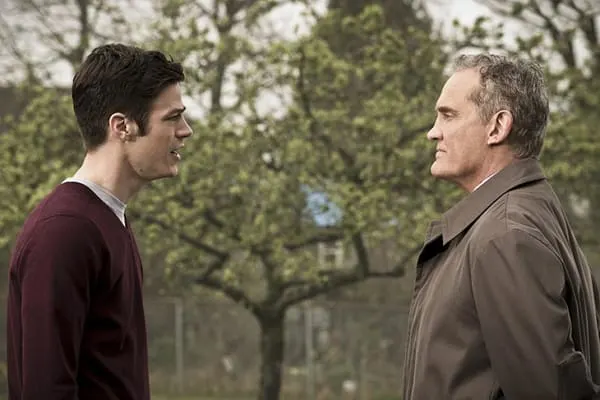
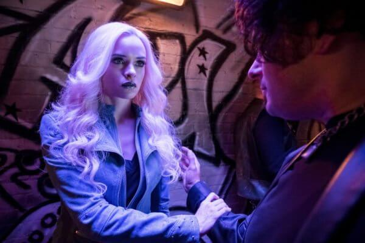
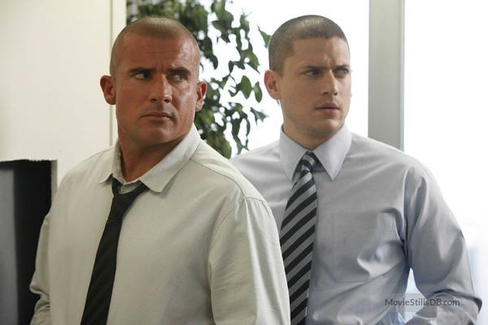
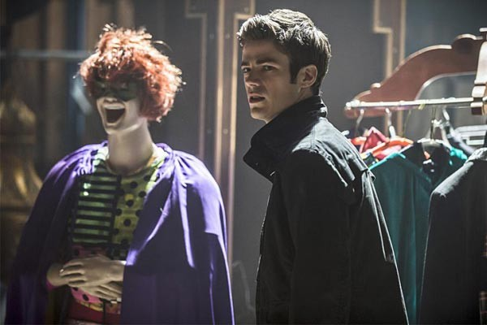
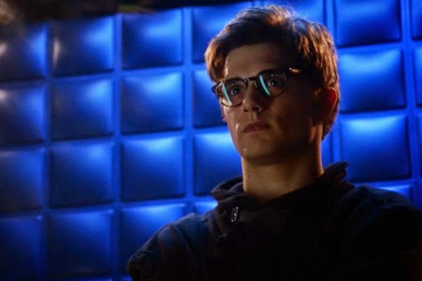

Curiosidades
Os Flashs da DC

Existem, na verdade 4 Flashs no Universo DC. O primeiro foi Jay
Garrick, estudante universitário que inalou gases de
experimentos químicos e transformou-se na
encarnação da velocidade do Deus Mercúrio. Cinco
anos depois, a DC Comics lança Barry Allen — o Flash mais
icônico — atingido por um raio com propriedades químicas
que o fez ser ainda melhor em seu emprego como cientista forense — e
salvador de Central City. Wally West, o terceiro Flash, começou
como ajudante de Barry, mas sofre o mesmo acidente de Barry e assume o
posto do herói quando seu antecessor morre em batalha. Depois
disso, temos ainda Bart Allen, suposto neto de Barry que vem do
século 30, e que assume duas identidades de herois antes de ser
o último — e menos famoso — Flash.
The Flash spin-off

The Flash nasceu como um spin-off de Arrow, mas Barry Allen deveria
ter aparecido já como o herói no episódio 2×20
(Seeing Red) de sua série mãe, para então seguir
sua própria história. No entanto, os produtores acharam
que isso iria interromper o ritmo de Arrow, por isso decidiram seguir
em frente com The Flash apenas usando o que já tinha sido
apresentado nos episódios 2×08 (The Scientist) e 2×09 (Three
Ghosts), quando Barry aparece pela primeira vez para ajudar o Arqueiro
Verde.
O Gorila Grodd

Depois de Barry acordar no S.T.A.R. Labs e conhecer o local com Wells,
vamos uma jaula aberta com o nome de Grodd. é uma
referência à um dos grandes inimigos dele, o Gorila
Grodd.
Bazinga!

A série The Big Bang Theory já foi referência em
The Flash: Cisco usou uma camiseta escrito “Bazinga” e outra com os
dizeres “Pedra, Papel, Tesoura, Lagarto, Spock”, em homenagem à
brincadeira apresentada por Sheldon Cooper, que, por sua vez,
já apareceu diversas vezes na comédia usando uma
camiseta com o símbolo do Flash.
Suspense até o final!

Para garantir que a identidade do Flash Reverso não fosse
descoberta antes da hora, durante a gravação do
episódio 1×09, The Man in the Yellow Suit, foi utilizado um
dublê para vestir o uniforme, de maneira que, mesmo com o rosto
borrado, fosse impossível de identificar o personagem que
estava ali antes que a série quisesse que seu espectadores
soubessem.
Coincidências entre Flashes

O pai de Barry, Henry Allen, é interpretado por John Wesley
Shipp, ator que deu vida ao primeiro Barry Allen das telinhas, na
série The Flash de 1990. Grant Gustin (Barry Allen), nasceu no
mesmo ano em que Shipp filmou o piloto da série original, e os
dois são da cidade de Norfolk, Vancouver.
Nevasca Vilã

Nas HQs, Cisco e Caitlin também possuem habilidades. Cisco
Ramon é o herói Vibro, enquanto Caitlin Snow é
Nevasca, uma vilã com poderes criocinéticos que se
opõe à Firestorm, formado pelo Dr. Martin Stein e Roonie
Raymond, seu noivo. Na season finale, quando Barry vê
vários universos paralelos, é possível observar
Caitlin no papel da vilã.
Parceiros de longa data

Wentworth Miller interpreta Leonard Snart/Capitão Frio, e seu
parceiro, Mick Rory/Onda Térmica, é seu irmão
ficcional da série Prision Break, Dominic Purcell.
O Trapaceiro é seu pai

Mark Hamill deu vida à James Jesse/Trapaceiro na série
atual, na de 1990 e também na animação Liga da
Justiça (2001). O figurino utilizado por ele é o mesmo
da série original. O ator também dá vida a Luke
Skywalker na franquia original de Star Wars, e utiliza uma das falas
mais icônicas no filme no episódio 1×17 (Trickster): “Eu
sou o seu pai”.
O Flautista

Uma curiosidade bem legal é que no roteiro original, o
personagem Hartley Rathaway (O Flautista) trabalharia na S.T.A.R. Labs
quando Barry acordasse e seria, provavelmente, parte da “Equipe
Flash”. Inclusive, segundo informações, seria ele que
teria criado o uniforme do herói, porém, decidiram
retirar ele para dar mais atenção ao Cisco.